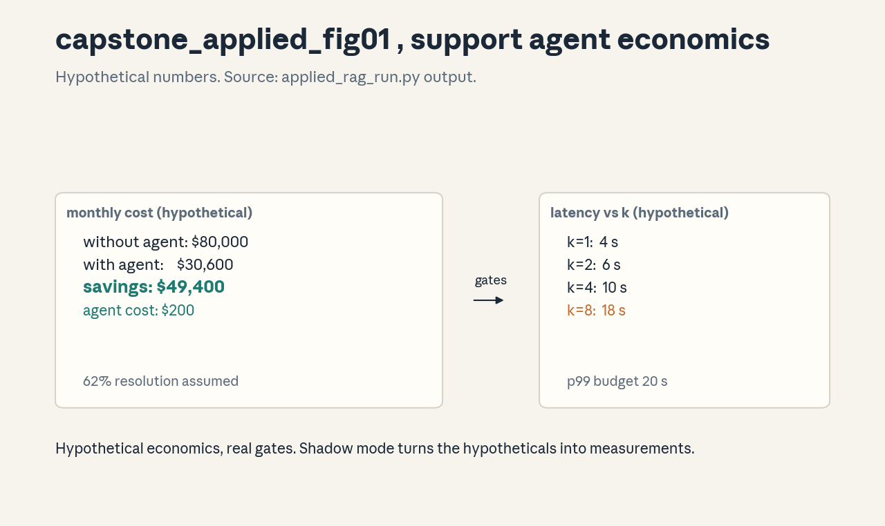

Capstone · Applied
Applied capstone , RAG support agent (FDE style)
Fictional company, hypothetical numbers throughout (labeled). Nothing
here is a real deployment or a real measurement. Runnable model:
applied_rag_run.py.
Discovery
Fictional “Northwind Outdoors” (hypothetical): 10,000 support tickets per month, 12 human agents, median first response 6 hours. Ticket mix: 45% order status, 25% returns, 20% product questions, 10% complaints. Stakeholders: support lead (owns quality), CFO (owns cost), customers (own patience).
Workflow baseline
Today: ticket arrives, queue, human reads, human searches the knowledge base, human replies. Measured baseline (hypothetical): $8 per ticket, 6-hour median response, CSAT 4.1/5.
Objectives
Cut median response under 5 minutes for the 70% of tickets that are informational, hold CSAT at or above 4.0, keep every refund or account change human-approved.
Constraints
No PII in prompts beyond the ticket itself. Knowledge base is the only source of truth. Latency p99 under 20 seconds. The agent never issues refunds.
Trust boundaries
The knowledge base is trusted. The ticket text is untrusted (prompt injection risk). Tool tiers: search (green), draft reply (yellow), refund issuance (red, human approval). See U07 C11.
Alternatives considered
- Bigger knowledge-base search only (cheap, no drafting).
- Full agent with refund rights (fast, unsafe).
- Human-in-the-loop on every reply (safe, no scale). Chosen: RAG agent with tiered permissions (option between 1 and 3).
Acceptance gates
- Data match: 500 production tickets through the pipeline, resolution rate within 5 points of the lab number.
- Latency: p99 under 20 s at k = 4.
- Cost: under $0.05 per ticket.
- Shadow: 2 weeks alongside humans, CSAT delta within 0.2.
- Rollback: one-command revert, tested.
Cost/latency (hypothetical, computed)
From applied_rag_run.py (all inputs hypothetical):
- 10,000 tickets, 62% resolved by the agent.
- Agent cost $200/mo, remaining human cost $30,400/mo.
- Total $30,600 vs $80,000 without: savings $49,400/mo.
- Latency p99: k=1 -> 4 s, k=2 -> 6 s, k=4 -> 10 s, k=8 -> 18 s.
These numbers illustrate the model, they are not measurements.
Rollout
Week 1-2: shadow mode, no customer-visible replies. Week 3-4: 10% of informational tickets, human review of every draft. Week 5+: ramp to 70% subject to gate 4. Kill switch: revert to human-only in one command.
Monitoring
Dashboard: resolution rate, escalation rate, p50/p99 latency, cost per ticket, CSAT, judge agreement on a 100-ticket weekly sample (U08 C06). Alerts: resolution drop > 5 points, p99 > 20 s, CSAT < 3.8.
Rollback
One command restores the human-only queue routing. Tested in staging before launch. Rollback trigger: any gate fails for 2 consecutive hours.
Ownership
Support lead owns quality gates. ML engineer owns the pipeline. On-call owns the kill switch. CFO owns the cost gate.
Handoff
Runbook: architecture diagram, tool tier list, prompt versions, eval reports, rollback command, contact list. The support team can operate it without the builders.
Stakeholder defense
To the CFO: the savings are hypothetical until shadow mode measures them. The ask is 4 weeks of shadow cost, not a commitment. To the support lead: no agent touches a refund, every draft is reviewed until gate 4 passes. To customers: a faster answer with a human behind it.
Figure

: cost bars and the k-vs-p99 curve. Rendered byrender_capstone_applied.py, numbers from the
runner output above, labeled hypothetical.